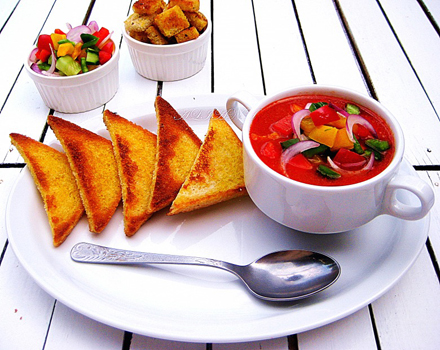
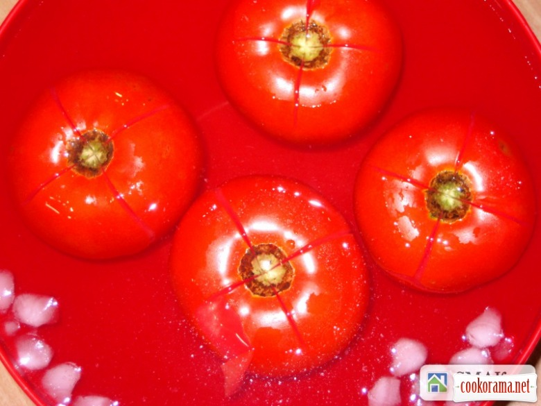
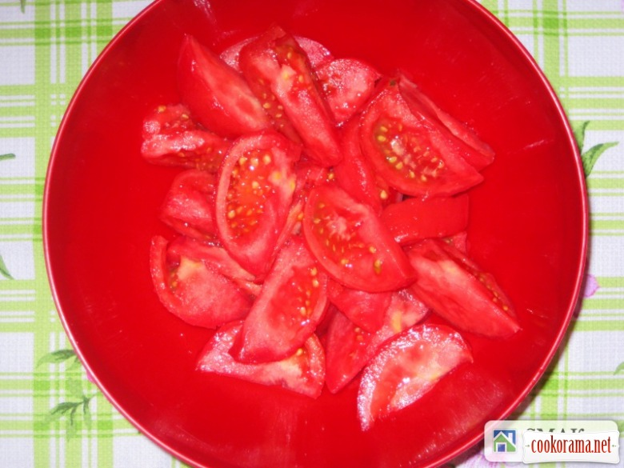
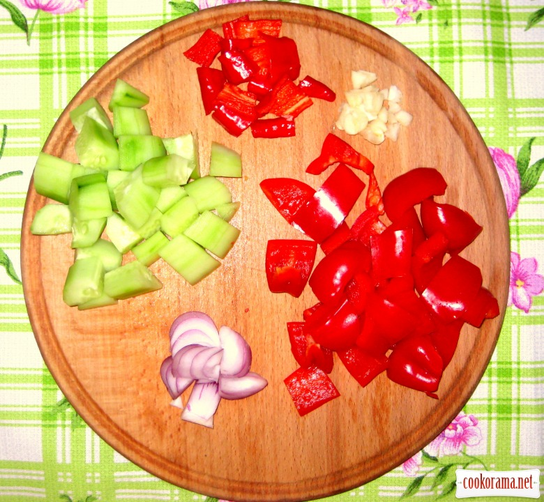
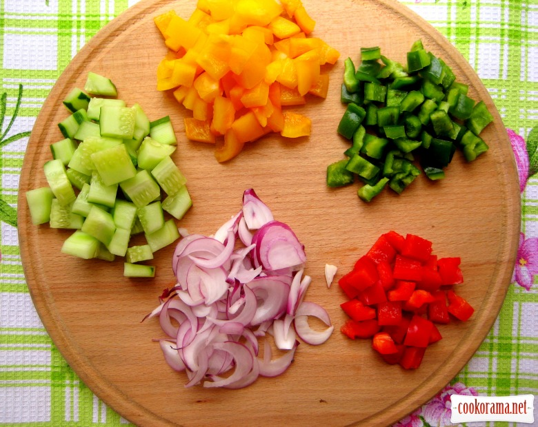
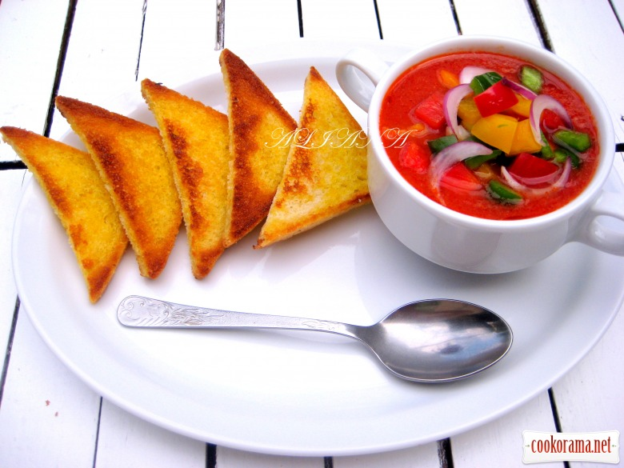

Гаспачо з часниковими крутонами

Інгредієнти: хтомати 1 кг огірки 2 шт. перець болгарський (різнокольорових) 3 шт. цибуля ріпчаста червона 1 шт. перець чилі 1 шт. часник (зубчики) 2 шт. хліб (черствий, без кірки, шматок)1 шт. оцет винний паста томатна 40 г. сіль олія оливкова цукор для крутонів: хліб тостовий часник трави ароматні
Кулінарний рецепт гаспачо з часниковими крутонами

Помідори вимити, надрізати, опустити в окріп на пару хвилин, потім у крижану воду (щоб не втратили колір).

Очистити від шкірки і плодоніжок, нарізати так щоб було зручно подрібнити в блендері.

Нарізати болгарський перець (червоний), чилі, половину цибулини, 1 огірок, роздавлений часник. Додати м'якуш хліба. Все подрібнити в блендері. На сковороді на оливковій олії протушкувати томатну пасту, приправити. Остудити, додати в нашу овочеву суміш. Охолодити в холодильнику.

Для подачі нарізати дрібними кубиками інші овочі.

Обсмажити або підсушити в духовці крутони, приправити травами, сіллю і натерти часником. Мммм це дуже смачно))) А наскільки корисно… Пригощайтеся))